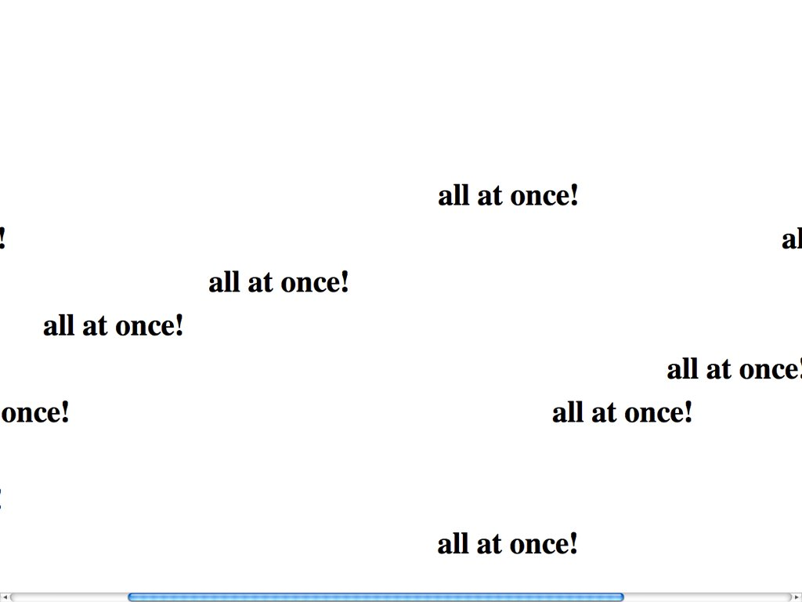

Natalie Bookchin
bio
Natalie Bookchin is a media artist who dabbles in internet art. Through her works such as Homework, The Intruder and Searching for the Truth we see her personality shine through. Her work takes the form of numbers, interactive websites and 80's game-like art. With Homework we can see where she began, as a co-creator with Alexei Shulgin, this project that started as a class assignment evolves into a larger net of art work that invovles both students and internet artists. Showing her love for community, collaboration and growth within her craft.

Projects & websites
Rhizome website -The Intruder-
The Intruder website
Rhizome website -Searching for the Truth-
Searching for the Truth static file
Rhizome website -Homework-
Homework static file